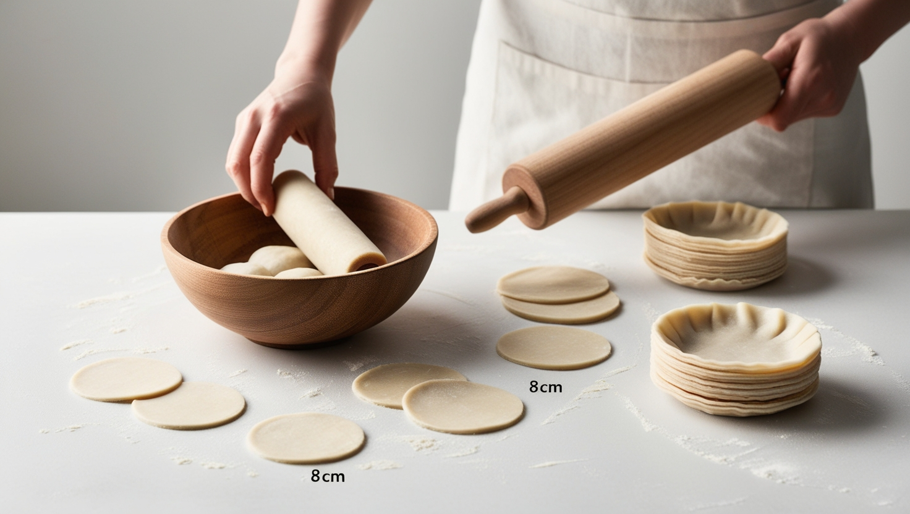

Paso 1
Prepara la masa mezclando la harina con la sal y agregando el agua caliente poco a poco. Amasa durante 10 minutos hasta que esté suave. Deja reposar cubierta durante 30 minutos. Luego, divide en bolitas y extiéndelas en círculos delgados de unos 8 cm de diámetro. Si prefieres, puedes usar obleas listas para dumplings.
